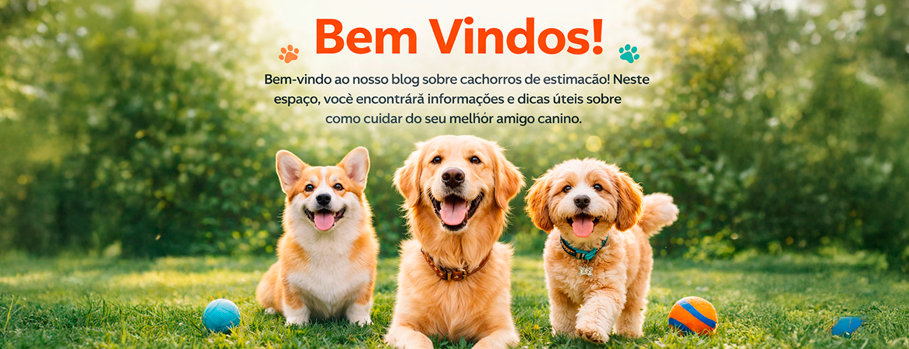
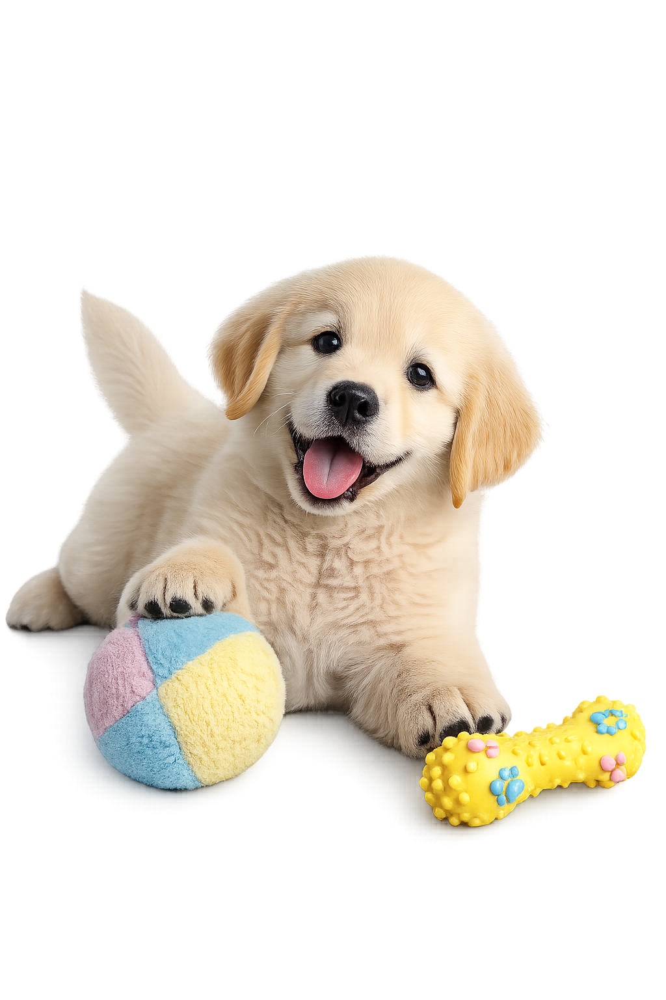

Raças de cachorros
Existem muitas raças de cachorro, cada uma com suas características e personalidades únicas. Algumas das raças mais populares incluem:
-
Labrador Retriever
Uma das raças mais populares do mundo, o labrador é conhecido por ser amigável, leal e inteligente.
-
Golden Retriever
Outro favorito popular, o golden retriever é um cachorro amigável e afetuoso que adora brincar.
-
Poodle
Uma raça inteligente e brincalhona, o poodle vem em três tamanhos diferentes e é uma ótima opção para pessoas com alergias.
-
Bulldog Inglês
Um cachorro amigável e leal, o bulldog inglês é uma raça tranquila e de baixa energia.
-
Pastor Alemão
Uma raça inteligente e corajosa, o pastor alemão é frequentemente usado como cão policial ou de guarda.

Dicas para treinamento de cachorro

- Use reforço positivo: recompense seu cachorro quando ele fizer algo certo, em vez de puni-lo quando ele fizer algo errado.
- Seja consistente:use os mesmos comandos e treinamentos todos os dias para que o seu cachorro entenda o que é esperado dele.
- Não desista: treinar um cachorro pode ser difícil, mas é importante ser persistente e continuar tentando.
- Envolva toda a família: todos devem participar do treinamento do cachorro para que ele entenda o que é esperado dele.
- Considere a ajuda de um profissional:se você estiver tendo dificuldades com o treinamento do seu cachorro, pode ser útil procurar a ajuda de um treinador profissional.
Esperamos que estas informações e dicas tenham sido úteis para você e seu cachorro. Lembre-se, cuidar de um cachorro é uma responsabilidade importante, mas com amor e atenção, você pode desfrutar de uma vida feliz e saudável com o seu melhor amigo peludo.